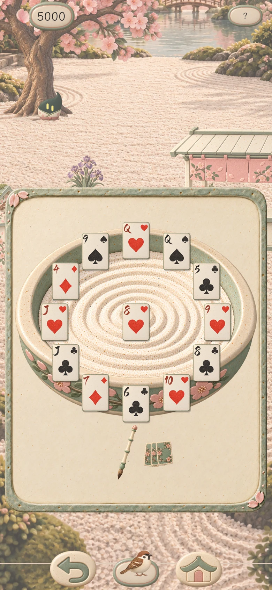

01 / ПАСЬЯНСЫ
Радость от карты на своём месте.
Косынка, Фрисел, Паук, Юкон… Классические игры обрели новый сад.
ВАШ МАЛЕНЬКИЙ ЯПОНСКИЙ УГОЛОК
Несколько карт, немного фишек — и время замедляется. Играйте спокойно, а затем создавайте свой уютный уголок вместе с Tomesi.
Без рекламы · В своём темпе · Без интернета
Маленький друг.
Сад только для вас.


ЧЕТЫРЕ УГОЛКА ДЛЯ ВАС
Растение у веранды. Фонарь у воды. Кот среди мха. Каждый предмет находит своё место, и сад понемногу оживает.
Кои неспешно плавают. Обустройство пруда привлекает новых гостей.
Утро, сумерки или лунный свет: выберите освещение для своего отдыха.

ПРОСТАЯ РАДОСТЬ ИГРЫ
От знакомых пасьянсов до небольших японских головоломок — выбирайте то, что хочется сегодня. Каждая победа помогает саду расцвести.
Косынка, Фрисел, Паук, Юкон… Классические игры обрели новый сад.

Рассматривайте узоры, убирайте фишки и дайте мыслям успокоиться.

Энсо, Цукими, Путь карпа… Небольшие головоломки для смены настроения.
Четыре бесплатные игры. Навсегда. Косынка, маджонг-пасьянс, Пирамида и Энсо.
Коллекция включает ещё двенадцать игр за одну покупку. Без подписки и рекламы.
Коснитесь его, чтобы поздороваться.
ТОТ ЖЕ TOMESI, НОВЫЙ УЮТНЫЙ МИР
Вы уже знаете его маленький зелёный силуэт. Здесь Tomesi надевает кимоно, устраивается рядом и сопровождает вас в каждом уголке сада. А по воде он плывёт в своей маленькой лодке.
За собранные лепестки можно выбрать ему новые наряды.
Интерактивный просмотр анимаций персонажа из игры.
Открыть мир TomesiПРЕЖДЕ ЧЕМ УСТРОИТЬСЯ ПОУДОБНЕЕ
Tomesi Garden скоро появится на iPhone и iPad. Ссылка для загрузки будет добавлена сюда сразу после выхода.
Нет. Ни перед партией, ни после победы. Сад останется спокойным местом.
Игры и сад работают без интернета и аккаунта. Подключение нужно для загрузки приложения, а также для покупки в App Store или её восстановления.
Играйте и собирайте лепестки. В садовой лавке их можно обменять на украшения, спутников, наряды и оформление карт.
Да. Перемещайте предметы в подходящие места: на землю, воду или веранду. В разделе «Мои украшения» указано, где их можно разместить. Перед домом найдётся место для растений, чайного сервиза и маленьких спутников.
Да, в игре есть режим с уменьшением движения. На этом сайте кнопка «Пауза» останавливает анимации; настройки вашего устройства тоже учитываются.
МЫ ОСТАВИЛИ ВАМ МЕСТО
Скоро на iPhone и iPad.
Есть вопрос? Напишите нам